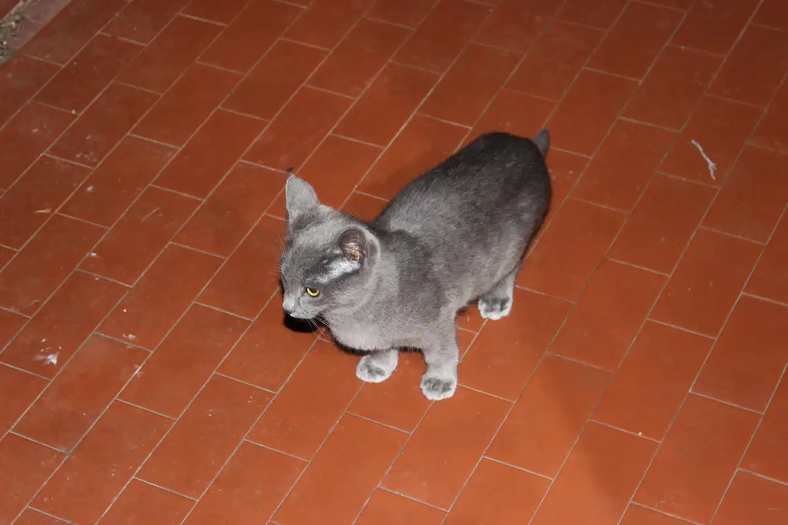

Petit pois
young Petit pois
Petit pois est curieuse
Petit pois toute choupi
Petit pois guette depuis le pouf
Petit pois se lèche la pattoune
Petit pois le petit saucisson
Petit pois se prélasse au soleil
Petit pois fait sa toilette
Petit pois fait de la boxe #1
Petit pois fait de la boxe #2
Petit pois fait de la boxe #3
de profil
de face
petite bouille